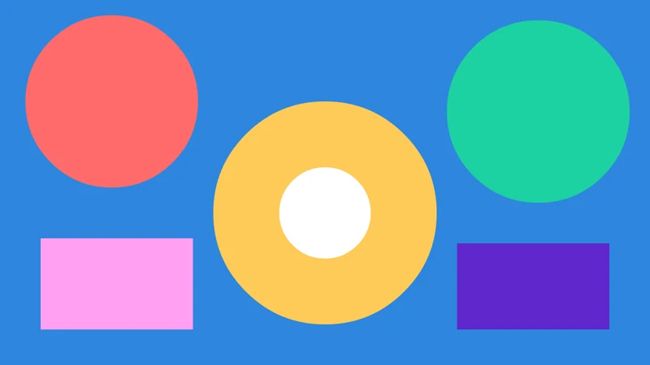

Tutorials
Masks
Shine a spotlight on a picture with a mask layer, then tween the mask to sweep the light across it.
This page is also a lesson inside Phoenix: choose and start Masks, and Phoenix points at each control as you go. It takes about 8 minutes.
To follow along here instead, download the starting document, masks.fla, and open it with .

In this tutorial you will make a spotlight: a circle on a mask layer that lets a picture show through only where it is, then sweeps across it.
The document is ready: the colorful Picture layer, and an empty Spotlight layer above it.
1. Pick the Oval tool
Press O, or click the Oval tool in the toolbox.
2. Draw the spotlight
Make sure the Spotlight layer is the current one, with the pencil beside its name; click its name if not. Then hold Shift and drag a circle on the left of the stage.
Its color doesn't matter: a mask only uses the shape of its fills.
3. Make it a mask
Right-click the Spotlight layer's name and choose Mask.
The Picture layer below becomes masked by it, and both layers are locked.
4. See the result
The picture now shows only through the circle, and the rest of the stage is empty.
On the stage a mask masks only while its layer is locked. Unlocked, it shows its own art and the picture whole, so you can edit it. Exports always mask.
5. Unlock the mask
Click the lock icon on the Spotlight layer's row to unlock it, so you can animate the circle. Leave the Picture layer locked.
6. Go to frame 48
Click frame 48 of the Spotlight layer, the last frame. At 24 frames per second that is two seconds in.
7. Insert a keyframe
Press F6, or choose Insert > Timeline > Keyframe. Frame 48 starts with a copy of the circle.
8. Move the spotlight
Press V for the Selection tool. Double-click the circle to select all of it, then drag it to the right side of the stage.
9. Tween the mask
Click any frame between 1 and 47 on the Spotlight layer, then choose Insert > Shape Tween, or right-click the frame and choose Shape Tween.
10. Lock it again
Click the lock icon on the Spotlight row again, so the mask masks on the stage.
11. Play it
Press Enter, or click the play button in the timeline header. The spotlight sweeps across and reveals the picture as it goes.
What you did
You made a mask layer, saw how locking it shows the result, and tweened the mask to make a moving spotlight.
To mask more layers with the same mask, drag them in just under it, or set their type to Masked in Layer Properties. There are more tutorials, such as Rigging with layer parenting.
For everything this tutorial touches on, see Masks and guides.